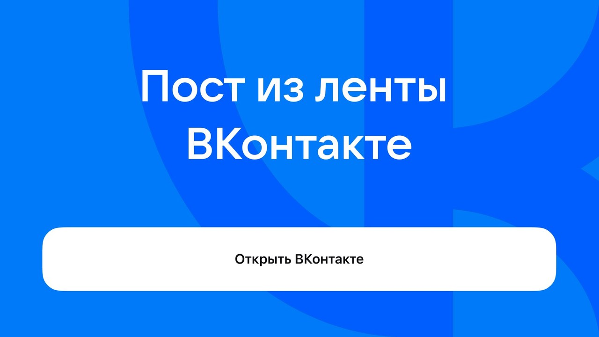

Холодной ковки не существует

Версия для чтения
Текст расшифрован с ролика (Whisper), вычитка по смыслу.
Уберите от экрана детей. Сейчас расскажу страшное. Холодной ковки не существует.
Прямо сейчас, в эту минуту, развергаются ворота гаражей, и голоса сварщиков уверенно заявляют. А как же так? Заявлено же, что ковка.
Поясняют, ковка — это процесс пластической деформации через нагрев, чтобы передать металлу необходимые свойства и сложную форму. То есть, как художник рисует кистями, кузнец рисует железо, передавая сложные формы на свой холст.
А так называемая холодная ковка делается на пресах, штампах, машинным оборудованием, либо гнётся на колёсе вручную. Тут не искусство и творчество, тут про массовость, поэтому забудьте про сложные формы, только просто и линейно.
А процесс её изготовления больше попадает под классификацию «гибки» либо «штамповка».
А почему же всё-таки ковку так назвали? А потому же, что и свою выпечку назвали с паром, а сухарики — круассанами. Продаётся лучше.
Согласитесь, вы бы не купили себе изящную иранскую либо китайскую штамповку. Не звучит.
Так что холодная ковка — это как имитированная икра. Похоже, ну в принципе да. Есть можно, ну как бы тоже да. Но единственное, что вкусно — это ценно.
Видишь, я до сих пор в чёрной рубашке, так что самое время подписаться и слушать офигительные рассказы про ковку.